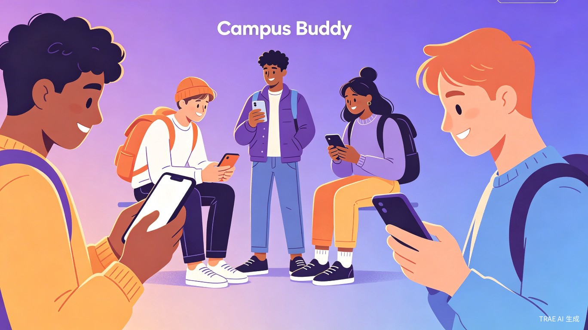

校园搭子计划是一款面向大学生的社交匹配平台，核心目标是解决大学生在兴趣爱好、学业目标、生活方式等方面"找不到同路人"的痛点。与现有泛社交软件不同，我们聚焦校园场景，通过精准的匹配算法和信任机制，让大学生能够高效找到真正志同道合的"搭子"。
我们的冷启动策略是以学校为单位，通过填写信息区分同一学校内不同类型的人，然后进行精准匹配。同一学校的学生具有天然的地域 proximity 和社交信任基础，这大大降低了匹配的摩擦成本。
| 用户类型 | 核心需求 | 匹配优先级 |
|---|---|---|
| 兴趣驱动型 | 找同好（运动、音乐、游戏等） | 兴趣标签匹配 |
| 目标驱动型 | 找考研/考公/实习搭子 | 目标强度 + 时间节奏 |
| 社交拓展型 | 扩大社交圈、认识新朋友 | 随机匹配 + 性格互补 |
| 情感需求型 | 寻找深度陪伴 | 价值观 + 相处模式 |
现有匹配逻辑主要基于兴趣标签的交集数量，但现实中两个人能否成为好的"搭子"，往往取决于更深层的因素。我们引入三大新增维度，在精准度和填写成本之间取得平衡。
用户在注册时选择目标强度等级：
系统会根据用户的实际行为（如打卡频率、履约率）自动修正其目标强度标签，避免"口号型用户"干扰匹配质量。
用户选择自己的作息类型：
系统同时通过用户的实际登录和使用时间推断真实作息，与自填数据进行交叉验证，提高匹配准确度。
不同搭子类型对应不同的相处模式问卷：
我们采用渐进式信息收集策略，将信息填写分散到整个使用旅程中：
| 阶段 | 时间成本 | 收集内容 |
|---|---|---|
| 注册阶段 | 约 10 秒 | 学校、昵称、基础兴趣标签（3-5个） |
| 首次匹配前 | 约 5 秒 | 目标强度、时间节奏（各1个单选） |
| 使用中无感补全 | 0 秒 | 通过行为数据自动推断偏好 |
| 高级选项（可选） | 按需 | 性格测试、详细兴趣细分 |
从简单的标签交集匹配升级为按搭子类型动态加权的余弦相似度算法。不同维度的权重根据搭子类型动态调整：
算法通过搭后评价和用户反馈实现权重自学习，持续优化匹配质量。
我们定义的"无感交友"是：不需要现实中刻意去认识，而是通过网络聊天自然熟悉，感觉好就继续深入，感觉不好就可以礼貌拒绝，因为匿名的机制也不会觉得尴尬。
当前技术架构基于 Python + SQLite + 原生 JavaScript，已能支撑 MVP 阶段的核心功能。未来需要补充的技术能力：
| 功能 | 技术方案 | 优先级 |
|---|---|---|
| 实时消息推送 | WebSocket / Socket.io | 高 |
| 匹配算法优化 | 协同过滤 + 余弦相似度 | 高 |
| 用户行为分析 | 埋点 + 数据分析管道 | 中 |
| 内容安全审核 | 敏感词过滤 + AI 审核 | 高 |
| 地理位置服务 | 基于学校的轻定位 | 低 |
校园币不仅是消耗机制，更是一个完整的经济循环系统，核心目标是激励优质行为、惩罚劣质行为、维持平台可持续发展。
| 途径 | 获得数量 | 说明 |
|---|---|---|
| 注册奖励 | 10 币 | 新用户初始体验资金 |
| 每日签到 | 1 币 | 培养每日使用习惯 |
| 充值购买 | 1 元 = 10 币 | 主要收入来源 |
| 满分评价奖励 | 9 币 | 每次获得对方 5 星评价 |
| 邀请好友 | 5 币 | 被邀请人完成首次匹配 |
| 连续履约 | 2-5 币 | 连续 7 天打卡/履约 |
| 场景 | 消耗数量 | 说明 |
|---|---|---|
| 随机匹配 | 1 币 | 基础匹配服务 |
| 定向匹配 | 3 币 | 按条件精准筛选 |
| 优先曝光 | 2 币 | 提高被匹配概率 |
| 延长聊天 | 2 币 | 延长 48 小时聊天窗口 |
满分评价奖励 9 币的设计具有深意：
社交平台的安全问题不容忽视。我们设计了三层递进式信任机制，从身份验证到行为约束，全方位保障用户安全。
| 维度 | Soul | 校园搭子 |
|---|---|---|
| 用户群体 | 泛年轻人群体 | 精准大学生群体 |
| 匹配范围 | 全国随机，距离远 | 本校优先，可线下见面 |
| 身份验证 | 无 | 学信网/校园邮箱认证 |
| 匹配目的 | 泛社交、娱乐 | 目标导向（学习/兴趣/运动） |
| 社交压力 | 需要维护虚拟形象 | 匿名破冰，低压力 |
超级课程表的核心功能是课程管理，社交只是附属模块。用户打开超级课程表的首要目的是查课表，而非社交，因此社交模块的流量和活跃度天然受限。
校园搭子从设计之初就是专门的社交工具，用户的每一次打开都有明确的社交意图，匹配效率和用户质量更高。
所有转型决策基于可量化的硬指标，避免"为了做移动端而做移动端"。整体路径为：Web MVP 验证 -> 微信小程序 -> 原生 App。
| 阶段 | 核心任务 | 验证指标 | 预估时间 |
|---|---|---|---|
| 阶段 1：Web MVP | 验证核心匹配逻辑，收集用户反馈 | 匹配成功率>=60%，7日留存>=35% | 3-6 个月 |
| 阶段 2：微信小程序 | 提升用户体验，快速获客，验证商业模式 | MAU>=5万，付费转化率>=3% | 6-12 个月 |
| 阶段 3：原生 App | 沉淀核心用户，拓展功能边界 | DAU>=1万，30日留存>=20% | 12-18 个月 |
不要急于转型移动端，而是回到产品本身，优化匹配算法和核心体验。如果连续 3 个月指标没有改善，考虑调整产品方向或终止项目。
重点优化传播机制和用户留存，推出校园大使计划、开学季活动等。不要盲目投入 App 开发。
校园搭子计划的核心价值在于精准匹配 + 信任机制 + 正向激励的三位一体设计。通过学校为单位的冷启动策略、三维渐进式匹配机制、匿名无感的交友体验、校园币经济循环、以及三层递进的安全信任体系，我们有信心打造一个真正解决大学生社交痛点的产品。
从 Web MVP 到小程序再到 App 的迭代路径，确保每一步都有明确的验证指标和退出条件，降低创业风险的同时最大化成功概率。
"让每个大学生都能找到志同道合的伙伴，在追逐梦想的路上不再孤单。"